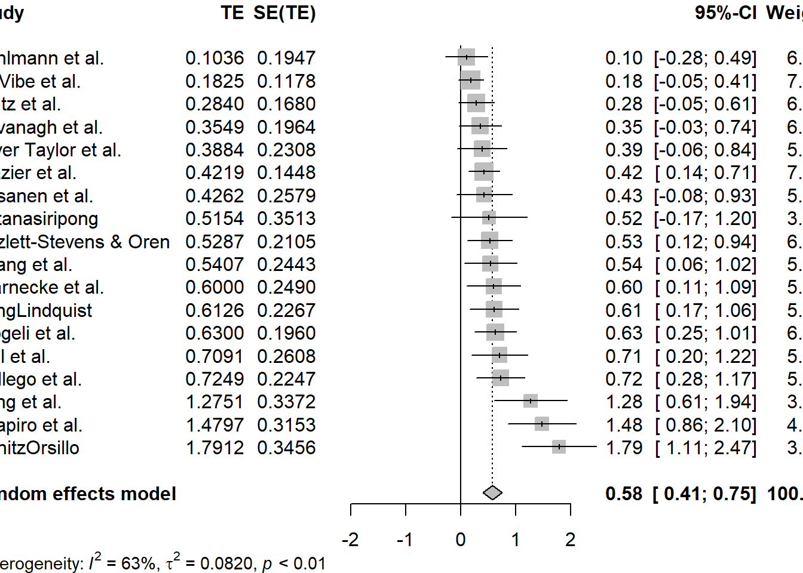

a statistical analysis that combines the results of multiple scientific studies. (Wikipedia)
Very important in e.g. medicine (where it’s relatively easy to use).
It’s a powerful statistical technique used to synthesize and analyze findings from multiple independent studies. It allows researchers to combine the results of several studies to draw more robust conclusions than those derived from individual studies alone. Meta-analysis is particularly valuable when individual studies may have limited sample sizes or conflicting results.
Meta-analysis involves systematically collecting and analyzing data from multiple studies on a specific topic or research question. The goal is to quantitatively summarize the collective evidence, identify patterns, and estimate the overall effect size or relationship between variables across studies.
Breakdown of some key aspects:
Study selection: The first step in meta-analysis is identifying relevant studies. This involves comprehensive literature searches across multiple databases, journals, and other sources to find all relevant research on the topic of interest.
Inclusion criteria: Establishing specific criteria for including studies in the meta-analysis. These can be publication date, study design, sample size, and outcome measures. Studies that meet these criteria are included, and those that do not are excluded.
Data extraction: Once relevant studies are identified, data extraction involves extracting key information from each study, such as sample sizes, effect sizes, confidence intervals, and other statistics that we think may be relevant.
Effect size calculation: Estimate the overall effect size or relationship between variables across studies. Common effect size measures include the mean difference, standardized mean difference (Cohen’s d), odds ratio, correlation coefficient, and risk ratio.
Weighting and aggregation: Not all studies contribute equally to the meta-analysis, for example studies with larger sample sizes or greater methodological rigor are typically given more weight in the analysis. Weighted averaging is used to combine effect sizes across studies, taking into account both the effect size and variability.
Heterogeneity assessment We assume that studies are not identical but may vary in their methods, populations, and effect sizes. Heterogeneity refers to the degree of variability among study results. Statistical tests, such as the Q-statistic and I^2 statistic, are used to assess heterogeneity and determine whether it is significant.
Publication Bias evaluation Publication bias occurs when studies with positive results are more likely to be published than those with null or negative results, leading to an overestimation of the true effect size. Various methods, such as funnel plots and Egger’s regression, are used to assess and adjust for publication bias in meta-analysis.
Interpretation and reporting The results of a meta-analysis are typically summarized in a forest plot, which visually displays the effect sizes and confidence intervals of individual studies as well as the overall pooled effect size. Meta-analysts must carefully interpret the findings, considering factors such as study quality, heterogeneity, and potential biases.
Goals
Can serve different goals:
Finding the “true” size of the relationship based on multiple studies.
Finding the average effect size based on multiple studies.
context-related (e.g. changes over time, sample characteristics, country, etc.)
Uncovering publication biases (e.g. a meta-analysis of several studies with statistically significant results may conclude that there is not enough evidence)
Some notes
This is by no means a complete or thorough guide.
This is an intro to show you some basic techniques and what has to be considered.
There are good tutorials and guidelines online that present more formal requirements for a proper metaanalysis study.
Step 1) Choosing your goal
There’s a variety of tasks that a metaanalysis can fulfill. Often, setting the goal will define how you approach further steps.
Goal: finding the true/combined effect size
One potential goal is to identify a true effect size when all you have is estimations. Depending on the field or issue this might be straightforward (e.g. the methods and approaches are always the same and only the samples differ) or complex (e.g. methods, periods, variables, samples, contexts differ).
In case of complex problems, you might want and need to add any such differences as control variables.
Specific things to consider:
what might affect a particular estimate.
are the estimates comparable (e.g. % change vs linear relationship vs odds ratios).
are you looking for a ‘true’ universal effect size (the fixed effect approach), or the ‘average’ effect size (the random effects approach)?
This goal might focus on finding a publication bias rather than worrying about the effect size. I.e. it might show that, e.g., there are 15 studies that agree with each other but due to publication bias, they should actually be considered as insufficient to confirm a hypothesis.
Specific things to consider:
are you interested in the source of the publication bias? I.e. if it relates to any identifiable variables?
Quick recap on the problems:
p-hacking (modifying the analysis just to reach the ‘significance’ goal)
data dredging (going through data just to find some relationships)
publication bias (authors might not pursue some results, or editors might prefer not to publish some results)
file drawer problem (unfinished studies, delayed studies, studies in progress)
HARKing (writing the hypotheses after – and not before – reaching results)
P-values often just above the significance threshold
More likely to be rounded down than up.
More likely to be reported in full if just above the threshold.
e.g. p-value of 0.1012 reported as “0.1012” but p-value of 0.0998 reported as “< 0.10”
etc.
Goal: identifying new relationships
Goal might be to identify how different methods affect the results. Or other factors such as: period, country/region, diversity and number of authors, authors’ affiliation or country of origin, type of publication, inclusion of specific variables, population, etc.
Specific things to consider:
the hypothesis (i.e. what exactly would you expect to find?)
relationship can be with the effect size, but also with the result in general, or probability of being published, etc.
Most meta-analyses require a painstaking amount of work during data collection. Unless the meta-analysis doesn’t go very deep - e.g. focuses on journals/names/author lists, etc. (meaning the data is scrapable).
If we want to go deeper and code effect sizes, statistics, outcomes, methods, etc., we’re going to have to carefully browse each text individually.
But that’s only once we have the articles for the sample. There’s a step before that.
A) Picking the sample
Due to somewhat arbitrary views on what should be included in a meta-analysis, the process should be documented thoroughly to ensure reproducibility and justify the choices.
Crucial: we need to define how we look for papers and what are the exclusion criteria.
Techniques for searching include:
Scholar Google (when? what keywords? how many search results browsed?)
Research databases like Scopus or Web of Science (when? what keywords?)
Snowballing, i.e. looking within the ones you’ve already found (e.g. starting from reviews)
Exclusion criteria, e.g.:
Being on topic (techniques above will likely return many irrelevant studies)
Published in journals / working papers / mimeos / presentations / conference proceedings / reports?
Any journals or peer-reviewed? or with Impact Factors?
Sample sizes, periods, countries, experimental studies, quality of causal inference?
Language
B) Data coding
How many coders (double-checks are good)?
How to define the variables?
Which results to look at (e.g. all or authors’ preference)?
One or more estimates per paper?
How many variables needed?
Step 3) Data preparation
Finding a common, standardised metric. Examples:
Focusing on a statistic (e.g. the t-statistic) rather than coefficients
Simplification: positive vs non-significant vs negative outcome
“Effect size”: common unit / scale (recalculation, transformation to % change, etc.)
Sometimes intermediate steps might be necessary (calculating statistics based on the information provided). Sometimes important data might be missing - you might contact the original author(s) and ask for the missing information.
Anecdote: I (WH) once had to uncover what was the movie analysed in this study. We were collecting data and needed information on what year the data in the studies represented. Took some detective work as original author(s) did not wish to disclose the information, but it turned out to be possible.
Key 1: effect sizes are independent from sample sizes.
Key 2: however, we may weigh them based on their accuracy (lower samples -> larger variance -> lower accuracy -> smaller weight)
In order to make the data construction as transparent as possible, we used an easily accessible but universal research database. Following Stanley and Jarrell (1998), in November 2000, we searched the Economic Literature Index (EconLit) for any reference to: ‘(wage* or salar* or earning*) and (discrimination or differen*) and (sex or gender)’. (…)
Our EconLit search led to 1541 references of which a large fraction was theoretical, or, in fact, covering an entirely different topic. The empirical papers were examined whether they actually used any regression analysis or simply reported mean ratios without holding productivity constant. Eventually, the desired estimates could be gained from 263 articles.
Some authors calculated the gender wage gap for several countries or time periods in one published paper. Likewise, they might use data from different distinct populations, like regional or sectoral entities. These estimates can be treated as independent estimates. Therefore, we divided the estimates from one paper into several ‘studies’ if the estimates have come from different time periods and/or different populations. This gives us 788 different studies.
Typically, authors present a number of estimates for each study, i.e. country and time unit. These estimates are usually based on different specifications of the regression model. Stanley and Jarrell (1998) selected only one estimate per paper for their meta-analysis. In particular, they chose ‘the OLS estimate which the author seemed to promote as the best’ (p. 955). We included all estimates the authors presented for a given study to avoid any possibility of a systematic biaswhen picking a certain estimate. (…). In total, this gives us 1535 estimates of the gender wage gap, on average two estimates per study.
Note: weighting is used to deal with lack of independence and uneven numbers of estimates per study.
Important
The literature on meta-analysis is now broader with clear guidelines for various steps. Here are two important (and quite recent) standards:
Source: This is a toy dataset containing pre-calculated effect size data of a meta-analysis on randomized controlled trials comparing the effectiveness of ‘third-wave’ cognitive behavioral therapy (CBT) interventions for perceived stress in college students to inactive controls.
Effect size data is provided as the standardized mean difference (SMD) between the intervention and control group and the corresponding standard error for each study at post.
The dataset also contains columns for study characteristics which may serve as potential effect size moderators.
Author character. The study label containing the author(s) of the study.
TE numeric. The calculated standardized mean difference at post-test between the intervention and control group.
seTE numeric. The standard error of the standardized mean difference.
RiskOfBias character. The risk of bias rating according to the Cochrane Risk of Bias Tool.
TypeControlGroup character. The type of control group used in the study.
InterventionDuration character. The dichotomized duration of the intervention.
InterventionType character. The type of third-wave intervention rationale used.
ModeOfDelivery character. The mode of delivery used for the intervention.
Number of studies: k = 18
95%-CI z p-value
Common effect model 0.4805 [0.3840; 0.5771] 9.75 < 0.0001
Quantifying heterogeneity:
tau^2 = 0.0820 [0.0295; 0.3533]; tau = 0.2863 [0.1717; 0.5944]
I^2 = 62.6% [37.9%; 77.5%]; H = 1.64 [1.27; 2.11]
Test of heterogeneity:
Q d.f. p-value
45.50 17 0.0002
Details on meta-analytical method:
- Inverse variance method
- Restricted maximum-likelihood estimator for tau^2
- Q-Profile method for confidence interval of tau^2 and tau
Where studlab gives us nice study labels and comb.fixed specifies the fixed effect approach.
Case 2. Our effect sizes are not calculated but we have the necessary data
In this dataset:
Ne is the number of observations in experimental group.
Me is the estimated mean in experimental group.
Se is the standard deviation in experimental group.
Number of studies: k = 6
Number of observations: o = 740 (o.e = 371, o.c = 369)
MD 95%-CI z p-value
Common effect model -0.9765 [-1.3170; -0.6360] -5.62 < 0.0001
Random effects model -1.8097 [-3.1011; -0.5184] -2.75 0.0060
Quantifying heterogeneity:
tau^2 = 2.1308 [0.5493; 17.0724]; tau = 1.4597 [0.7411; 4.1319]
I^2 = 84.9% [68.9%; 92.7%]; H = 2.57 [1.79; 3.69]
Test of heterogeneity:
Q d.f. p-value
33.12 5 < 0.0001
Details on meta-analytical method:
- Inverse variance method
- Restricted maximum-likelihood estimator for tau^2
- Q-Profile method for confidence interval of tau^2 and tau
Number of studies: k = 18
95%-CI z p-value
Random effects model 0.5771 [0.4068; 0.7475] 6.64 < 0.0001
Quantifying heterogeneity:
tau^2 = 0.0820 [0.0295; 0.3533]; tau = 0.2863 [0.1717; 0.5944]
I^2 = 62.6% [37.9%; 77.5%]; H = 1.64 [1.27; 2.11]
Test of heterogeneity:
Q d.f. p-value
45.50 17 0.0002
Details on meta-analytical method:
- Inverse variance method
- Restricted maximum-likelihood estimator for tau^2
- Q-Profile method for confidence interval of tau^2 and tau
One popular way of depicting such analyses: forest plots
With meta package this is very simple. We just put our results into the forest() function:
```{r}m %>% forest(sortvar=TE)```
```{r}m_re %>% forest(sortvar=TE)```

Finding what explains the results
Once we have defined what is what in a meta-analysis setting, we can again use it for other calculations. Let’s see if the effect sizes are determined by how the study was conducted and who was involved.
```{r}m %>% metareg(`mode of delivery` + `type of students`)```
Mixed-Effects Model (k = 18; tau^2 estimator: REML)
tau^2 (estimated amount of residual heterogeneity): 0.1468 (SE = 0.0872)
tau (square root of estimated tau^2 value): 0.3832
I^2 (residual heterogeneity / unaccounted variability): 73.88%
H^2 (unaccounted variability / sampling variability): 3.83
R^2 (amount of heterogeneity accounted for): 0.00%
Test for Residual Heterogeneity:
QE(df = 11) = 39.2473, p-val < .0001
Test of Moderators (coefficients 2:7):
QM(df = 6) = 2.8707, p-val = 0.8249
Model Results:
estimate se zval pval ci.lb
intrcpt 0.3538 0.5913 0.5984 0.5496 -0.8050
`mode of delivery`group 0.3711 0.3903 0.9508 0.3417 -0.3938
`mode of delivery`online 0.0297 0.3846 0.0772 0.9385 -0.7240
`type of students`general 0.1063 0.5018 0.2118 0.8322 -0.8773
`type of students`medical studens -0.2139 0.5209 -0.4106 0.6813 -1.2349
`type of students`nursing students 0.0143 0.5029 0.0285 0.9773 -0.9713
`type of students`psychology 0.0146 0.5614 0.0260 0.9792 -1.0857
ci.ub
intrcpt 1.5127
`mode of delivery`group 1.1360
`mode of delivery`online 0.7834
`type of students`general 1.0899
`type of students`medical studens 0.8071
`type of students`nursing students 0.9999
`type of students`psychology 1.1149
---
Signif. codes: 0 '***' 0.001 '**' 0.01 '*' 0.05 '.' 0.1 ' ' 1
Checking for publication bias
Again, we use what we defined previously.
```{r}m %>% funnel()```
And we can add some additional features, e.g. let’s make it a ‘contour-enhanced’ funnel plot:
The study looks at various studies of children choosing what kind of toys they play with (stereotypically ‘boy-toys’ or stereotypically ‘girl-toys’). Mean times (in seconds) of playing are recorded, along with sample sizes and standard errors (for boys playing with each kind of toys and for girls playing with each kind of toys).
There’s also information about the studies (e.g. year) and a bit about quality.
Here’s authors’ descriptions to the data:
Neutral toys (1 = neutral toys included; 2 = neutral toys not included); Parent present (1 = absent; 2 = minimal interaction; 3 = moderate or full interaction); Setting = location of study (1 = home; 2 = laboratory; 3 = nursery); Country = gender inequality index, a measure of how gender egalitarian the country was at the time the study took place.
Note. Quality is assessed using Newcastle–Ottawa Quality Assessment Scale criteria adapted for this study. A star indicates that the study fulfilled this criterion; an X indicates that the study did not fulfil this criterion. Case definition adequate: clear justification for the gendered nature of a toy, for example, based on research. Representativeness of cases: recruitment of consecutive participants. Selection of controls: whether boys and girls were comparable in terms of social background. Parental opinion: whether parents’ views on gender were measured. Comparability of both groups: the toys were comparable (in size, shape, etc.) and if the boys and girls were comparable in age. Ascertainment of behaviour: Play behaviour was clearly defined. Same ascertainment method for both groups: The measurement of the outcome (time spent playing with toy) was clearly defined. Nonresponse rate: whether either nonuptake or dropout rates reported.
Experiment using what you’ve learned:
combine the effects
create a funnel plot (what do you see?)
check if methods / quality affect the results
does author gender affect it?
Example scripts
Here are some example scripts in both python (not complete) and R.